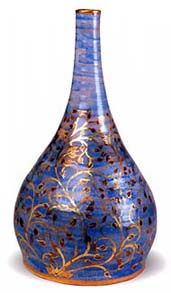
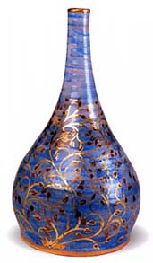
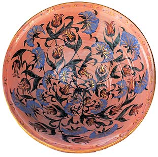

| Carolinda Tolstoy
A flamboyant British potter.
 British
studio potter Carolinda
Tolstoy studied fine art in Paris from 1967-69. From 1969-70
she studied at the Inchbald School of Design and from 1972-73 at
the Sir John Cass School of Art, both in London. From 1973-80 she
worked at the Chelsea Pottery. She established her own studio in
London in 1978, and also works overseas, including in Greece, France
and Italy. Tolstoy is known for her richly decorated, wheel-thrown
faience, which is finished with gold and other luster. British
studio potter Carolinda
Tolstoy studied fine art in Paris from 1967-69. From 1969-70
she studied at the Inchbald School of Design and from 1972-73 at
the Sir John Cass School of Art, both in London. From 1973-80 she
worked at the Chelsea Pottery. She established her own studio in
London in 1978, and also works overseas, including in Greece, France
and Italy. Tolstoy is known for her richly decorated, wheel-thrown
faience, which is finished with gold and other luster.
  
Tolstoy is the descendant of an old Middle Eastern family, which
is also connected to one of Russia's prominent families. She draws
inspiration from various sources, including Russian architecture,
17th century Iznik pottery and the Safavid illuminations and miniatures
of 17th century. The result is a style of pottery displaying these
influences but representing a style unique to Tolstoy.
Ernst J. Grube's monograph 'Carolinda
Tolstoy Ceramics' is more than just a song of praise about
an accomplished potter. It also takes us through sections of the
history of ceramics, in particular those connected with Tolstoy's
work, placing it in a historical context - Islamic ceramics, maiolica
(tin-glazed pottery), luster as well as the influence of William
De Morgan's Oriental ceramics.
Characteristic
of her work is a flowing and playful, stylized floral decoration
rooted in Ottoman design and sometimes reminiscent of William De
Morgan's work. This is combined with gold luster and other metallic
lusters.
Book Review
More Articles
More Artists of the Week
|